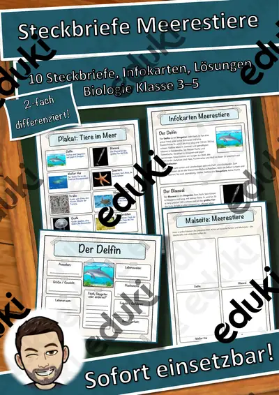
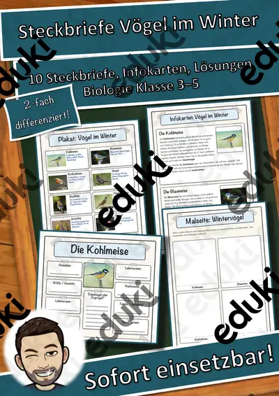

Der Menstruationszyklus – Bastelvorlage (Klasse 8)
Der Menstruationszyklus – Bastelvorlage (Klasse 8)Zyklus-Drehscheibe und Faltwürfel zum Selbstbasteln
Mit diesem Material (Bastelvorlage) bringe ich das Thema „Schwangerschaft & Verhütung“ klar strukturiert in den Unterricht. Alles ist sofort einsetzbar: ausdrucken, kopieren, loslegen.
Lernziele:
- Ich kann die Phasen des Menstruationszyklus in der richtigen Reihenfolge nennen.
- Ich kann erklären, was beim Eisprung passiert.
- Ich kann beschreiben, warum es zur Menstruation kommt.
Differenziert dort, wo es sinnvoll ist: Die Aufgaben gibt es in genau drei Stufen (★ leicht, ★★ mittel, ★★★ schwer). Info-, Merk- und Begriffsseiten sind für alle gleich.
Enthalten (12 Seiten):
- Hinweise für die Lehrkraft
- Bastelanleitung
- Infoblatt
- Faltwürfel ★
- Faltwürfel ★★
- Faltwürfel ★★★
- Drehscheibe: obere Scheibe
- Drehscheibe ★
- Drehscheibe ★★
- Drehscheibe ★★★
- Begriffe-Training
- Lösung
Die Seiten für die Lehrkraft (Hinweise, Lösungen) sind oben rechts mit einer roten Ecke markiert. Alle Texte sind eigens für dieses Material geschrieben und fachlich zweifach geprüft.
Viel Freude beim Einsatz wünscht Snice
FachBiologie
KlasseKl. 8
SchulformSek I Mittlere Schulform
MaterialartMal- und Bastelvorlagen
Ähnliche Materialien

04-22 Internationaler Tag der Mutter Erde

Homeschooling Materialpaket (wachsend) (auch Homeschooling)

Homeschooling Materialpaket (wachsendes Materialpaket) (auch Homeschooling)

Coronavirus - Ansteckung über Bargeld? - Homeschooling

Homeschooling Materialpaket (auch Homeschooling) Coronavirus (wachsend) - Materialpaket

Was ist ein Pandemieplan? - Homeschooling

Steckbriefe Meerestiere – Materialpaket (10 Tiere aus dem Meer, differenziert, mit Lösungen)
